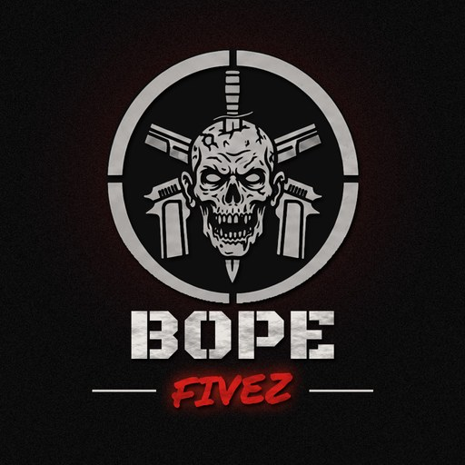

Regras do Bope
Leitura obrigatória para todos os membros. Gerência: Eros Hayashi.
📘 Regras Gerais
- Respeite a hierarquia (disponível na aba de hierarquia).
- Respeite os colegas e trate todos como gosta de ser tratado.
- LEIAM AS REGRAS DA CIDADE. Não passaremos a mão na cabeça de ninguém.
- Tenha boa conduta: sem preconceito, sem flamingo, sem rage.
- Qualquer problema deve ser levado à gerência. PERGUNTEM antes, para depois não virem com a desculpa de “não sabia”.
📕 Regras de Ação
Conduta na operação
- Escute quem está comandando a operação. Call limpa e organizada, sem fugir do assunto.
- Os líderes devem ser definidos antes, para evitar conflito durante a ação. Desacato é passível de advertência.
- Prepare-se antes de ir. Já avisamos várias vezes: quem vai despreparado coloca a vida do amiguinho em jogo e, em alguns casos, a operação inteira.
- Problemas no PC, microfone, headset ou qualquer coisa que afete diretamente a operação devem ser reportados antes, para não colocar em risco a vida de todos.
- Se sua participação for autorizada, respeite suas limitações e cumpra o papel que lhe foi designado.
- Não tome decisões individuais. Tudo deve ser passado ao gerente da ação.
- É proibido falar sobre ações nas zonas vermelhas e verdes. Quem vazar informações poderá ser desligado do Bope.
- Em confronto, é proibido lootear o inimigo. Só é autorizado checar adrenalina e tirar a arma da mão dele.
- Ações individuais ou em grupos pequenos são permitidas, desde que estejam no squad. Outras rádios que não a principal são liberadas, mas avise o motivo de estar saindo dela.
- Ações em zonas vermelhas e verdes: a call é no Discord.
Comunicação
- RÁDIO DE AÇÃO: 102.
- QRR só será acionado por quem avisar sobre a ação que está indo fazer.
- OBRIGATÓRIO ativar o /bussola antes da ação. Calls do tipo “tem gente aqui, ali, lá” serão ignoradas. Se repetidas com insistência, serão passíveis de advertência. LEMBREM: call limpa e organizada.
- É obrigatório que o gerente da ação cubra 1 membro com kit desmanche e kit reparo.
Válido a partir de hoje (@everyone)
- Em toda ação combinada, os membros devem ter em mãos pelo menos 1 adrenalina, cedida pelo Bope ou de estoque pessoal.
- Quem conseguir deve estar gravando a ação. Em caso de denúncia, teremos as provas necessárias.
- Veículos só poderão ser desmanchados por quem puder printar ou gravar. Tenham salvo o registro.
- É proibido fazer live da reunião.
- Tenham bom senso ao retirar equipamento do baú. Lembrem que estamos em grande quantidade, então não é necessário levar mais que 100 munições de rifle e 40 de shotgun.
- Snipers só podem ser utilizadas por quem estiver autorizado pelo gerente da ação, em situações especiais, como ida às zonas de perigo ou eventos designados.
- Sem farpas para outras famílias que possam prejudicar o clã.
📗 Regras Comuns
- É proibido desorganizar o baú. Quem fizer isso fica passível de advertência e de perda dos itens.
- Quem faz a encomenda é quem deve entregá-la, para evitar confusões futuras.
- Verifiquem o baú antes de fazer encomendas.
- Respeitem o prazo das encomendas.
🚨 Punições
A leitura das regras acima é obrigatória. Estamos aderindo ao sistema de advertências:
Cada situação será avaliada pela gerência e a decisão fica com os superiores. As regras estão aqui para serem seguidas: estamos deixando claro o que esperamos de vocês, então saibam que o descumprimento delas será punido sim, pois estamos avisando. As regras valem a partir de hoje, então não tem mais isso de “eu não sabia”.
OBS: Tudo que foi citado acima está passível de mudanças e atualizações. Cabe a Eros Hayashi e sua gerência modificar decisões e regras que precisarem ser mexidas, ou tratar casos à parte. Quem não estiver de acordo com as regras, favor chamar a gerência para que o desligamento do Bope seja feito.